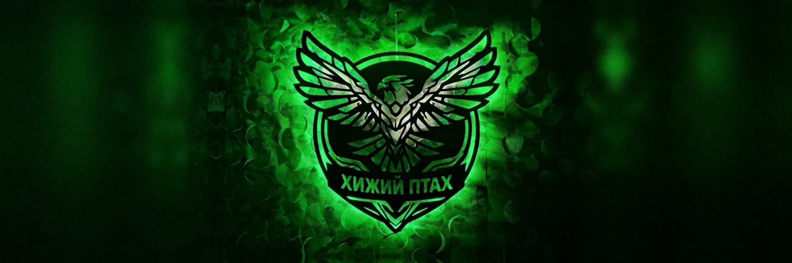
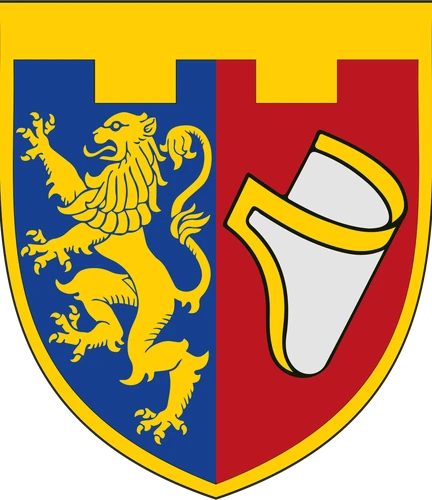
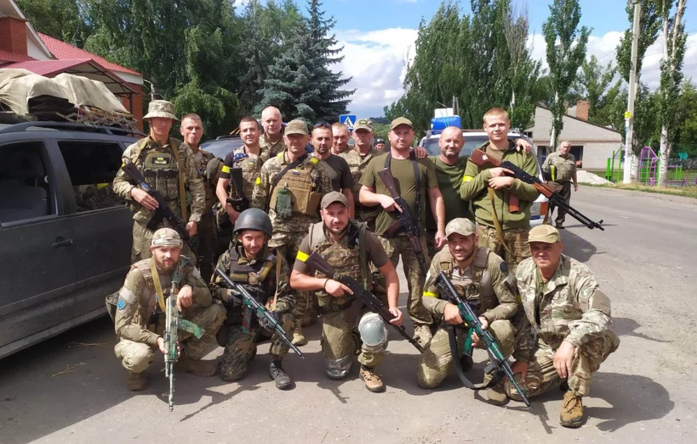
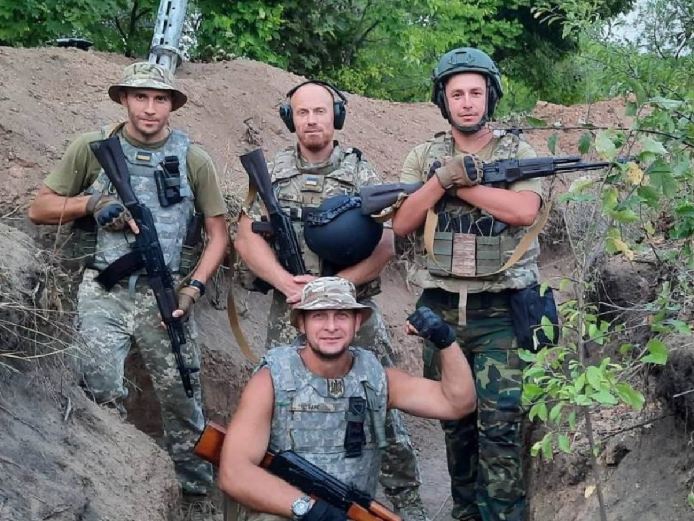
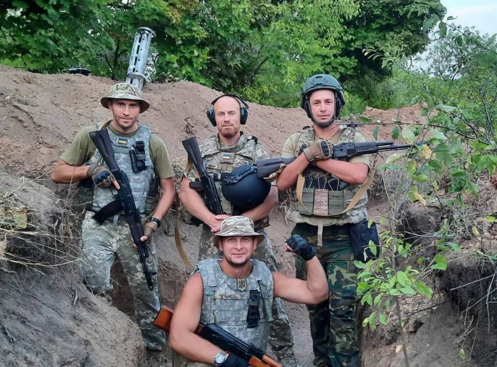
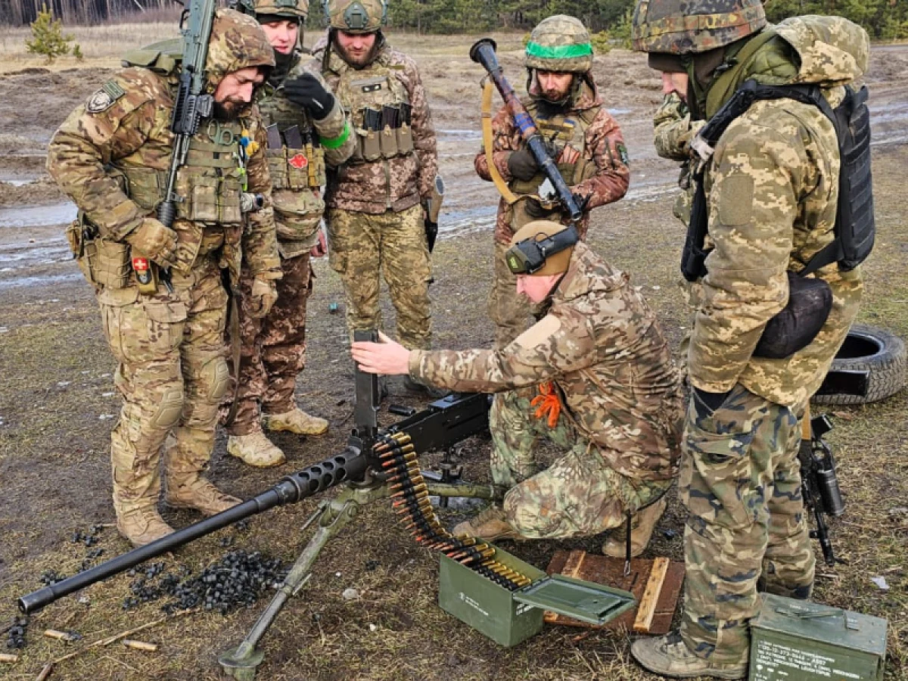
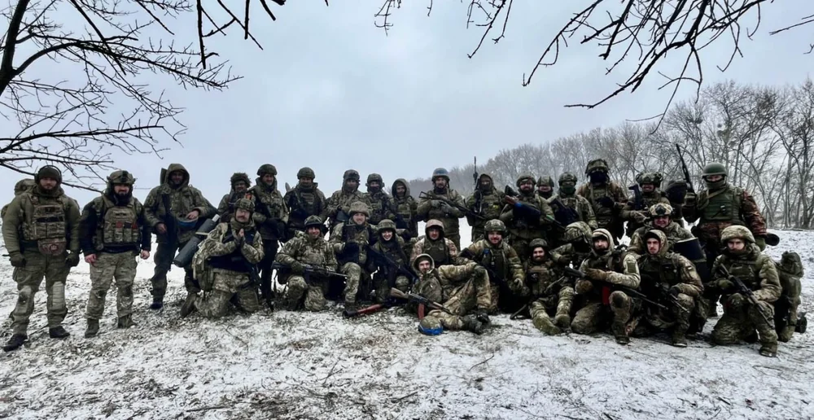
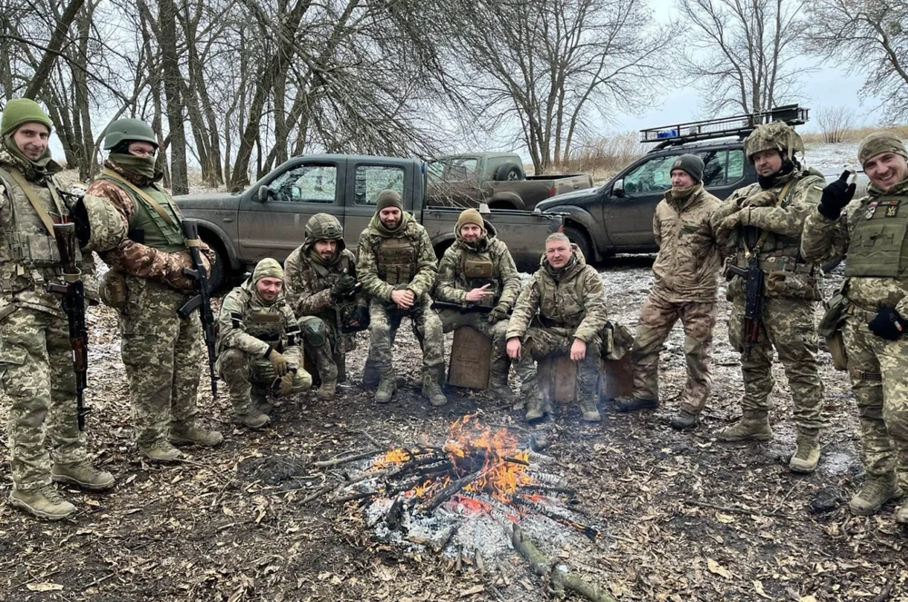
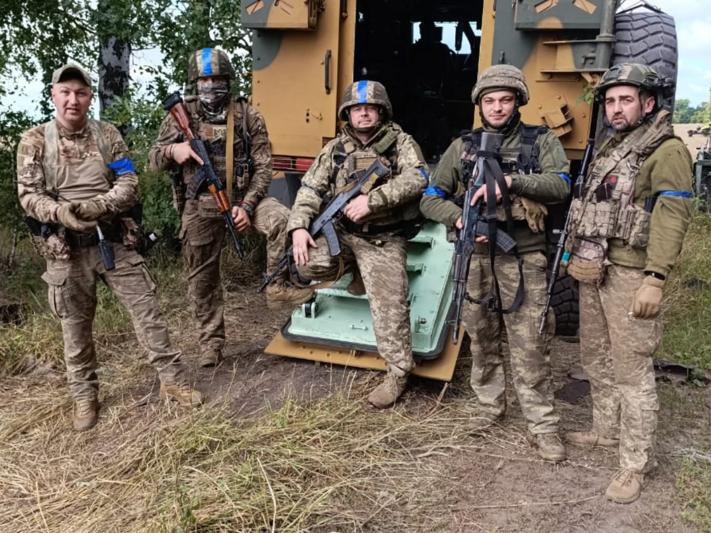

Відтепер ти серед своїх

Нарукавні знаки
14 травня 2025 року бригада отримала повну геральдичну систему нарукавних знаків своїх батальйонів із гаслом HONOR ET PATRIA. Знаки батальйонів пов’язані з історією та культурою Львівщини й стали видимим втіленням спільної ідентичності бригади.


м. Львів

м. Шептицький

с. Стрілковичі,
Самбірський район

м. Стрий

смт. Немирів
Яворівського району
Нагрудний знак «Честь і Батьківщина»

Почесний прапор

Сувенірний прапор

Командир

Полковник Бондаренко Ігор Петрович, командир 103-ї окремої бригади територіальної оборони імені митрополита Андрея Шептицького Регіонального управління Сил територіальної оборони «Захід» Збройних Сил України.
Освіта
2003 рік. Закінчив Військовий інститут телекомунікацій та інформатизації Національного технічного університету України «Київський політехнічний інститут».
2022 рік. Закінчив Національний університет оборони України імені Івана Черняховського (оперативно-тактичний рівень — ОТР).
2025 рік – курс вищого керівного складу стратегічного рівня в Національному університеті оборони України імені Івана Черняховського.
Військовий шлях
У 1998 році розпочав службу в Збройних Силах України.
З 2003-го по 2015-й рік проходив військову службу у 80-му окремому аеромобільному полку (бригаді).
У 2005-му році брав участь у підтриманні миру та безпеки в Республіці Ірак.
З 2014-го року у складі 80-ї бригади брав участь в АТО, зокрема в обороні Луганського аеропорту та звільненні Слов'янська.
З 2015-го року проходив службу у складі багатонаціонального органу військового управління литовсько-польсько-української бригади «LITPOLUKRBRIG» (НАТО).
З 2018-го року проходив військову службу в Командуванні Десантно-штурмових військ Збройних Сил України.
З 2022-го по 2023-ий роки проходив військову службу у 46-й окремій аеромобільній бригаді Десантно-штурмових військ, приймаючи участь у звільненні Херсонщини і бойових діях на Донеччині, в районі оборони Бахмута та Соледара.
З 2023-го року по 2024-й рік — заступник командира 41-ї окремої механізованої бригади. Брав активну участь у бойових діях на Куп'янському напрямку Харківської області.
З лютого 2024-го року — командир 103-ї окремої бригади територіальної оборони імені митрополита Андрея Шептицького.
Нагороди
Нагрудний знак «За військову доблесть».
Медаль «Ветеран служби».
Орден Богдана Хмельницького III ступеня (Указ Президента України від 16 вересня 2024 року № 633/2024) — за захист державного суверенітету та територіальної цілісності України, зокрема за особисту мужність і героїзм, виявлені під час Курської операції.
Командування
 Кушик Петро Осиповичначальник штабу — заступник командира бригади, полковник
Кушик Петро Осиповичначальник штабу — заступник командира бригади, полковник Гончаров Євген Анатолійовичзаступник командира бригади, полковник
Гончаров Євген Анатолійовичзаступник командира бригади, полковник Кірілов Дмитро Юрійовичначальник артилерії — заступник командира бригади, полковник
Кірілов Дмитро Юрійовичначальник артилерії — заступник командира бригади, полковник Музика Олександр Йосифовичзаступник командира бригади з психологічної підтримки персоналу, полковник
Музика Олександр Йосифовичзаступник командира бригади з психологічної підтримки персоналу, полковник Третяк Андрій Леонідовичначальник логістики — заступник командира бригади, підполковник
Третяк Андрій Леонідовичначальник логістики — заступник командира бригади, підполковник
Структура бригади
Підрозділи бригади
 Управління (штаб) 103-ї ОБрТрО
Управління (штаб) 103-ї ОБрТрО 1-й батальйон територіальної оборони
1-й батальйон територіальної оборони 2-й батальйон територіальної оборони
2-й батальйон територіальної оборони 3-й батальйон територіальної оборони
3-й батальйон територіальної оборони 4-й батальйон територіальної оборони
4-й батальйон територіальної оборони 5-й батальйон територіальної оборони
5-й батальйон територіальної оборони 1 батальйон безпілотних систем «Чорний Стриж»
1 батальйон безпілотних систем «Чорний Стриж» 2 батальйон безпілотних систем «Хижий Птах»
2 батальйон безпілотних систем «Хижий Птах» Розвідувальна рота
Розвідувальна рота Зенітна батарея «Пугач»
Зенітна батарея «Пугач» Артилерійська батарея
Артилерійська батарея
Бойовий шлях

103-тя бригада створена у 2018 році, дислокується у Львівській області, перебуває у складі Регіонального управління Сил ТрО «Захід».
Від початку повномасштабного вторгнення бригада виконує бойові завдання із захисту України. Наразі захищає кордони України на Сумському напрямку.
Для бригади найвищою цінністю є людина — її професійний розвиток, відповідальність, взаємна довіра та готовність захищати рідну землю.
Командування створює умови, у яких військовослужбовець розвивається, опановує нові спеціальності, здобуває бойовий досвід. Для багатьох цивільні навички стають основою для військової професії, а військова служба відкриває нові перспективи для професійного та особистого зростання.
У 103-й бригаді люди проходять шлях від солдата до командира та стають фахівцями своєї справи.
Нагороди

- 30 вересня 2022Вручено бойовий прапор.
- 23 серпня 2024Присвоєно почесне найменування «імені митрополита Андрея Шептицького».
- 27 червня 2025Бригада отримала та освятила Почесний прапор – окрему відзнаку, що присвоюється за видатні заслуги у захисті України.
- 23 червня 2026Бригаду удостоєно почесною відзнакою «За мужність та відвагу».
2 батальйон безпілотних систем «Хижий Птах»

Батальйон створено 29 березня 2019 року як 64-й окремий батальйон територіальної оборони з місцем дислокації в місті Золочів Львівської області.
Першим командиром батальйону став підполковник Роман Маліновський. Під його керівництвом підрозділ пройшов шлях становлення: проводили мобілізацію та відбір особового складу, облаштовували розміщення й побут, налагоджували зв'язок і медичне забезпечення, навчали воїнів радіаційного, хімічного та біологічного захисту, а підрозділи проходили бойове злагодження.

Бойовий шлях
З перших днів повномасштабного вторгнення російської федерації командування батальйону разом із місцевою владою організувало мобілізаційні пункти. До лав підрозділу масово долучалися мешканці Золочівського району Львівщини.
16 березня 2022 року батальйон завершив бойове злагодження: перевірили особовий склад, озброєння й техніку, підготували підрозділи до виконання завдань. Наступного дня, 17 березня, батальйон приступив до виконання бойових завдань.
На початку травня 2022 року батальйон зайняв оборону в районі Серебрянки на Донеччині, уздовж правого берега Сіверського Дінця, поблизу Дронівки та Сіверська. Там же розмістився командно-спостережний пункт батальйону.

З 10 червня по 10 липня 2022 року батальйон перебував у Черкаській області, де відновлював боєздатність і проходив бойове злагодження.

Наприкінці серпня 2022 року батальйон прийняв від 54-ї окремої механізованої бригади смугу оборони вздовж правого берега Сіверського Дінця.

У вересні 2022 року батальйон перейшов до наступальних дій. Підрозділи вели штурмові та пошуково-ударні дії на напрямках Крива Лука – Ямпіль – Зарічне та Крива Лука – Діброва – Лиман, створюючи умови для звільнення Ямполя та Лимана.

6 жовтня 2022 року батальйон змінив на позиціях підрозділи 80-ї окремої десантно-штурмової бригади та зайняв новий рубіж оборони.
З листопада 2022 року батальйон утримував район оборони поблизу Першотравневого.

Згодом разом із 65-м батальйоном та підрозділами 66-ї бригади батальйон розпочав наступ у напрямку Андріївки та Сватового із завданням вийти до південних околиць Джерельного та правого берега річки Ревуха. Одночасно з початком наступу розвідувальний взвод батальйону проводив демонстраційні дії та вів розвідку в смузі наступу, виявляючи опорні пункти, скупчення живої сили й техніки противника. Підрозділи інженерно облаштовували зайняті позиції та утримували їх, відбиваючи контратаки ворога. Водночас батальйон налагоджував логістику та медичне забезпечення своїх воїнів.
До кінця травня 2024 року батальйон у складі 103-ї бригади виконував бойові завдання в зоні відповідальності ОТУ «Сіверськ».
З травня 2024 по липень 2025 року воїни батальйону боронили Сумщину, зокрема в районах Яструбиного, Обод і Степного.
30 липня 2025 року батальйон перетворено в 3-й батальйон територіальної оборони 103-ї бригади.

З 8 серпня по 4 вересня та з 16 по 28 вересня 2025 року батальйон виконував бойові завдання на території Курської області російської федерації у складі УВ «Курськ».

1 січня 2026 року батальйон перетворено у 2-й батальйон безпілотних систем 103-ї бригади. Нині батальйон виконує бойові завдання на Сумщині.
Нагороди воїнів батальйону
З початку бойових дій за особисту мужність і самовіддані дії у захисті державного суверенітету та територіальної цілісності України, а також за вірність військовій присязі військовослужбовців батальйону неодноразово представили до державних і відомчих нагород.
- Орден Богдана Хмельницького III ступеня2
- Орден «За мужність» II ступеня3
- Орден «За мужність» III ступеня3
- Орден «За мужність» III ступеня (посмертно)6
- Медаль «За військову службу Україні»4
- Відзнака Президента України «За оборону України»35
- Нагрудний знак Міністра оборони України «Знак пошани»6
- Нагрудний знак Міністра оборони України «За зразкову службу»7
- Відзнака Міністерства оборони України — медаль «Золотий тризуб»1
- Відзнака Міністра оборони України «Захиснику України»8
- Відзнака Міністра оборони України «Воєнний хрест»2
- Відзнака Міністра оборони України «Хрест доблесті»4
- Відзнака Міністра оборони України «Хрест Сил територіальної оборони»14
- Почесний нагрудний знак Головнокомандувача Збройних Сил України «Сталевий хрест»6
- Почесний нагрудний знак Головнокомандувача Збройних Сил України «Золотий хрест»25
- Почесний нагрудний знак Головнокомандувача Збройних Сил України «Срібний хрест»5
- Відзнака Міністерства оборони України — медаль «За поранення»75
- Медаль «Захиснику Вітчизни» (посмертно)2
Результативність батальйону
Втрати противника з 29.04.2022.
| Категорія | Знищено | Пошкоджено | Всього |
|---|---|---|---|
| Особовий склад | 295 | 239 | 534 |
| Танки | 1 | 1 | 2 |
| ББМ | — | 1 | 1 |
| Артилерія/міномети | 1 | 1 | 3 |
| РСЗВ (ТОС-1) | 1 | — | 1 |
| Автомобільна техніка | 15 | 9 | 24 |
| БпЛА розвідувальні | 32 | 4 | 36 |
| ФПВ дрони | 305 | — | 305 |
| Ударні БпЛА | 14 | — | 14 |
| Спеціальна техніка | — | 3 | 3 |
| РЕР/РЕБ | — | 1 | 1 |
| Склад боєкомплекту | 7 | 1 | 8 |
Командири батальйону
Символіка та традиції
29 березня, день створення батальйону, визначено Днем військового підрозділу.
Управління батальйону
Тяглість, що стає силою

103-тя бригада продовжує традицію поколінь, для яких захист рідної землі завжди був особистою справою. Тяглість національної ідентичності поєднує історію Галичини, досвід українських визвольних змагань і сучасну боротьбу за незалежність України.
Наш духовний батько — митрополит Андрей Шептицький. Його приклад нагадує про поєднання сили й відповідальності, служіння Батьківщині та поваги до людської гідності. Ці принципи сьогодні знаходять продовження у Кодексі честі воїна 103-ї бригади — правилах, які визначають те, якими людьми ми залишаємося під час війни.
Ми віримо в громадянина у формі — людину, яка у критичний момент історії своєї країни готова стати на її захист. Військова форма не скасовує громадянських прав і гідності — вона є свідомим вибором людини не залишатися осторонь, коли Батьківщина потребує захисту.
Для нас традиція — це те, що ми пам'ятаємо й зберігаємо від попередніх поколінь, чим живемо сьогодні та що передамо нашим нащадкам.
Та сама земля, ті самі люди, та сама мета

Ще задовго до того, як з'явилося поняття «територіальна оборона», Галичина вже жила за її принципами. У середньовічному Львові, місцеві цехи відповідали за окремі ділянки міських мурів. Ковалі, шевці, пекарі, купці — кожен мав своє місце в оборонній системі. Містяни різних професій знали: коли приходить ворог – вони стають захисниками свого міста. Традиція особистої відповідальності за свободу рідного краю утверджувалася століттями. Щоразу, коли Галичина потребувала захисників, громада ставала військом для боротьби з ворогом.
Перша хвиля визвольних змагань 1917–1921-го років була боротьбою за відродження української держави. У стрій зі зброєю в руках ставали студенти, селяни, ремісники, вчителі, службовці — люди, які власним вчинком підтвердили право України на незалежність.
Під час другої хвилі визвольних змагань у 1938–1950-их роках боротьбу за незалежність України продовжили підпільники ОУН та воїни УПА. Українці знову довели, що сила спротиву народжується насамперед у родинах і громадах.
У 2014-му історія повторилася – ми стали частиною третьої хвилі визвольних змагань. Після революції Гідності до війська пішли ті, хто ще вчора працював лікарями, вчителями, інженерами, водіями, підприємцями. Вони стали воїнами АТО, тому що вирішили боротися за майбутнє України.
У 2022-му війна продовжилася з початком повномасштабного вторгнення. У численні черги до військкоматів ставали прості люди – вони змінювали цивільне вбрання на однострій і попри страх та невідомість вирушали на бій з окупантами. Завдяки цим небайдужим людям народилася сучасна територіальна оборона Львівщини – 103-тя окрема бригада.
Наша сила у давній традиції української громади — відповідати за свою землю, своїх людей і свою свободу. Наша відповідь загарбнику залишилася такою ж, як і багато століть тому: «Коли ворог приходить на нашу землю, ми беремо до рук зброю».
Клятва
Віра і служіння

Андрей Шептицький — митрополит Української греко-католицької церкви, одна з найбільших постатей в історії Галичини і всієї України. Він народився у шляхетній галицькій родині. Роман граф Шептицький міг просто насолоджуватися зручним, спокійним і заможним життям. Натомість став братом Андреєм і обрав служіння народу, вірі та Батьківщині.
Шептицький не командував арміями й не здобував перемог на полі бою. Але він усе життя навчав тому, що є передумовою справжньої перемоги, — відповідальності перед Богом, народом і власною совістю. Митрополит підтримував українську мову, освіту, культуру, науку, кооперативний рух, молодіжні організації та громадські ініціативи. Він допомагав створювати основу сильної держави – самостійну громаду, здатну діяти спільно, довіряти одне одному й брати відповідальність за власне майбутнє.
Під час двох світових воєн і зміни окупаційних режимів митрополит залишався зі своїм народом. Він засуджував насильство, рятував переслідуваних, закликав до єдності й нагадував, що навіть у найтемніші часи людина не має права втратити свою людяність.
103-я бригада носить ім'я митрополита Андрея Шептицького, тому що він — наш духовний батько. Людина, на яку варто рівнятися, приклад того, як жити і діяти — з принципами, без компромісів із совістю, з любов'ю до рідного краю і свого народу. Девіз нашої бригади — Honor et Patria («Честь та Батьківщина») — суголосний світогляду митрополита Андрея Шептицького. Бо лише людина честі здатна по-справжньому служити своїй державі.
Для воїна 103-ї бригади спадщина Шептицького — у щоденному нагадуванні собі про те, що сила без честі перетворюється на насильство, а зброя без совісті — на загрозу для тих, кого вона покликана боронити.
Молитва
Господи,
Дякую Тобі за дар життя, за мою землю, за мій народ, за тих, хто стоїть поруч зі мною.
Дай мені мудрість відрізняти важливе від другорядного, правду від брехні, обов'язок від спокуси легкого шляху.
Дай мені мужність не відступати перед небезпекою, не втрачати надії у важкі години та не зрадити тих, хто довірив мені своє життя.
Навчи мене бути сильним без жорстокості, рішучим без ненависті, впевненим без гордині.
Допоможи мені пам'ятати, що зброя в моїх руках служить не руйнуванню, а захисту мого народу, моєї родини, моєї держави.
Благослови моїх побратимів і посестер. Зміцни тих, хто сьогодні в бою, підтримай тих, хто поранений, втіш тих, хто втратив найдорожчих.
Даруй мені серце, здатне до співчуття, розум, відкритий до науки й правди, і волю, вірну служінню Україні.
Нехай після мене залишиться більше добра, ніж було до мене.
Нехай мої вчинки будуть гідними пам'яті тих, хто віддав життя за свободу нашого народу.
І нехай я завжди пам'ятаю, що справжня перемога починається з перемоги над власним страхом, слабкістю та байдужістю.
Амінь
Вільні люди, які обрали свободу

Ми цінуємо кожного і кожну за їхнє рішення стати у стрій і боронити Львівщину та Україну. Їхній внесок безцінний – заради спільної перемоги у майбутньому вони віддають своє теперішнє – жертвують особистим часом, який могли би провести зі своїми друзями, батьками, дітьми, чоловіками чи дружинами.
Для більшості з нас війна була першим досвідом військової служби — випробуванням, яке змінило все життя. Та разом з цим перед нами відкрився шлях, на якому людина відкриває в собі більше, ніж знала про себе раніше. Під час служби люди навчаються, ростуть, загартовуються, опановують нові професії, беруть на себе дедалі більшу відповідальність. Стають командирами, пройшовши шлях від солдата до комбата. Стають переможцями. Стають Героями України. І завжди залишаються Людьми.
Кожен з нас мріє про мирне й спокійне життя, але жоден з нас не проміняє лінію бойового зіткнення на охорону блокпостів чи заводів у тилу. Тому що саме тут – на передовій – знаходяться фронтири новітньої історії України, де виборюється свобода та незалежність нашої Батьківщини.
Як у духовному житті ми керувалися заповідями, так у війську ми приймаємо наказ як частину служіння вищій меті. Бо в наших жилах тече кров предків — нескорених, вільних українців. Від них ми успадкували пам’ять про боротьбу і розуміння свободи як відповідальності. Тільки по-справжньому вільна людина здатна приймати дисципліну й виконувати накази. Бо вона розуміє, заради чого це робить — заради життя побратимів, захисту свого народу, свободи своєї Батьківщини.
Віримо, що настане день, коли ми повернемося до своєї родини, роботи, друзів та мирного життя. Переконані, що окрім спогадів про цю війну, ми залишимо своїм дітям сильну державу. Державу, в якій громадянин знає свої права, виконує свої обов’язки і в критичний момент історії своєї країни готовий її захищати зі зброєю в руках.
Кодекс честі
- 1Служи більшому, ніж ти самПам'ятай: твоя служба не про особисту славу. Ми служимо Україні, народові та побратимам. Особистий успіх нічого не вартий, якщо він не служить спільному добру.
- 2Будь сильним і залишайся людиноюВоїн не стає кращим від жорстокості. Ми рішучі проти ворога, але не дозволяємо війні знищити нашу людяність, честь і совість.
- 3Навчайся все життяЗнання є зброєю. Ми постійно вдосконалюємося у військовій справі, вивчаємо історію, культуру, технології та досвід інших. Неосвічений воїн становить небезпеку для себе і побратимів.
- 4Не шукай винних — шукай рішенняСкарги не змінюють реальність. Кожен військовослужбовець відповідає за свою ділянку роботи та робить більше, ніж від нього вимагають обставини.
- 5Бережи побратимаСила підрозділу вимірюється не кількістю людей, а рівнем довіри між ними. Ми підтримуємо слабшого, допомагаємо пораненому, навчаємо молодшого та поважаємо старшого. Ніхто не залишається наодинці зі своїми проблемами чи викликами.
- 6Будь вимогливим до себеНе вимагай від інших того, чого не готовий зробити сам. Звання дає відповідальність, а не привілеї. Приклад важливіший за наказ.
- 7Поводься гідно всюдиТи представляєш Бригаду навіть тоді, коли не носиш однострій. Слова, вчинки та поведінка військовослужбовця мають зміцнювати авторитет українського війська.
- 8Твори, а не руйнуйМи не лише захищаємо державу. Ми будуємо її власною працею, дисципліною, культурою та прикладом служіння.
- 9Люби Україну діломПатріотизм вимірюється не словами. Патріотизм — це сумлінно виконане завдання, підготовлений підрозділ, врятоване життя побратима та відповідальність перед майбутніми поколіннями.
- 10Залиш після себе більше, ніж отримавКожен військовослужбовець має зробити Бригаду сильнішою, ніж вона була до нього. Передай знання. Навчи наступника. Підготуй заміну. Залиши спадок. Це і є справжнє служіння.
Юрій Жуковець

Юрій Жуковець (Змій), Герой України. Народився у місті Радехів на Львівщині. До війни керував власним агентством нерухомості, а ще під час навчання в університеті пройшов підготовку на військовій кафедрі, склав присягу народові України та здобув звання молодшого лейтенанта — офіцера запасу.
Коли почалося повномасштабне вторгнення, Юрію було 23 роки. Провівши шість днів у чергах військкомату, він потрапив на службу через щойно сформовану 125-ту бригаду ТрО, а згодом продовжив службу в 103-й окремій бригаді територіальної оборони імені митрополита Андрея Шептицького. Пройшов шлях від командира взводу до командира розвідувальної роти, отримавши звання капітана.
Воював на Лиманському напрямку, у Харківській, Донецькій та Сумській областях, а також брав участь у Курській операції на території Курщини (Російська Федерація).
У серпні 2024 року під час зачистки населеного пункту потрапив у засідку та отримав п'ять кульових поранень, проте не втратив контролю над ситуацією — продовжив командувати підрозділом і особисто вивів усіх бійців із зони обстрілу без втрат.
За особисту мужність і героїзм у захисті державного суверенітету та територіальної цілісності України Юрію Жуковцю 5-го жовтня 2024 року присвоєно звання Героя України з врученням ордена «Золота Зірка».
Любомир Мікало

Любомир Мікало (Батя), Герой України. Любомир родом із міста Шептицького на Львівщині. У війську з перших днів повномасштабного вторгнення — 24 лютого 2022 року долучився до 103-ї окремої бригади територіальної оборони імені митрополита Андрея Шептицького як доброволець. Служить номером обслуги гранатометного взводу роти вогневої підтримки.
Пройшов бойовий шлях через Донецьку, Луганську, Харківську та Сумську області. Неодноразово отримував поранення, але щоразу повертався до побратимів і продовжував службу. Півтора року воював пліч-о-пліч із власним сином.
Звання Героя України отримав за 42 доби в оточенні — з 30 травня по 10 липня 2025 року його група утримувала позицію в селі Олексіївка на Сумщині, повністю відрізана ворогом. Без нормального водопостачання, під постійними штурмами, бійці вели активне полювання на противника — знищили близько 30 окупантів і втримали позицію до кінця. Любомир отримав зламане ребро, розрив обох барабанних перетинок і множинні контузії.
День виходу з оточення, 10 липня 2025 року, збігся з іншим випробуванням: того ж дня дружині Любомира робили операцію через онкологічне захворювання — про це він дізнався лише після виходу на зв'язок.
6 грудня 2025 року Любомиру Мікало присвоєно звання Героя України з врученням ордена «Золота Зірка» — за особисту мужність і героїзм у захисті державного суверенітету та територіальної цілісності України.
Сергій Артемюк

Під командуванням підполковника Сергія Артемюка під час операції зі штурму та утримання визначених позицій було організовано ефективне управління підрозділами, відбиття численних атак противника, евакуацію поранених і проведення контратак.
Завдяки особистій мужності, рішучості та грамотному плануванню командира українські підрозділи зберегли зайняті позиції, завдали противнику значних втрат: близько 50 військовослужбовців знищено, 3 взято в полон.
Організовані засідки, взаємодія з розвідкою та інженерне мінування маршрутів руху ворога сприяли зриву його штурмових дій і знищенню живої сили та техніки.
Підполковник Артемюк особисто координував дії підлеглих у складних бойових умовах, забезпечуючи оперативне реагування на зміни обстановки та успішне виконання поставлених завдань.
Петро Кушик

Завдяки професійному плануванню бойових дій, ефективній організації роботи штабу та безперервній координації підрозділів забезпечено стійкість оборони, відбито 14 ворожих штурмів і витримано 32 артилерійські обстріли без втрати займаних рубежів.
Організовані заходи з посилення оборони, управління резервами та координації вогневого ураження дозволили зірвати спроби противника покращити тактичне положення й успішно відбити наступальні дії.
У результаті бойової роботи підрозділів військової частини за визначений період знищено 299, поранено 360 та взято в полон 20 військовослужбовців армії рф.
Професійні та злагоджені дії з організації управління військами зробили вагомий внесок у посилення обороноздатності та успішне виконання бойових завдань.
Василь Гарасим

Під командуванням підполковника Василя Гарасима батальйон успішно виконував бойові завдання з оборони визначеної смуги, прикриття дій основних сил ЗСУ та утримання зайнятих позицій під постійним вогневим впливом противника.
Завдяки вмілим діям командира було організовано евакуацію поранених, що дозволило врятувати понад 30 військовослужбовців підрозділів ЗСУ.
Під його керівництвом покращено тактичне становище батальйону, здійснено просування до державного кордону України та облаштовано спостережні позиції, які вдалося утримати попри артилерійські обстріли й атаки ворожих БпЛА.
Підполковник Гарасим проявив високий професіоналізм, рішучість і відповідальність, особистим прикладом мотивуючи підлеглих на успішне виконання бойових завдань.
Юрій Савчук

Під безпосереднім командуванням капітана Юрія Савчука батальйон безпілотних систем завдав противнику значних втрат у живій силі та техніці.
Завдяки грамотному плануванню бойових завдань, ефективному застосуванню безпілотних систем і своєчасному виявленню ворожих цілей було знищено та поранено десятки військовослужбовців противника, уражено й пошкоджено сотні укриттів, автомобільну та броньовану техніку, артилерійські системи й склад боєприпасів.
Крім того, організоване дистанційне мінування суттєво ускладнило пересування та логістику ворога.
Професіоналізм, рішучість і вміле керівництво капітана Савчука сприяли зриву наступальних дій противника та посиленню обороноздатності українських підрозділів.
Ярослав Гафінов

Валентин Зінчук

Лейтенант Зінчук Валентин Миколайович із початком повномасштабного вторгнення добровільно вступив до лав 103-ї бригади ТрО та пройшов бойовий шлях від стрільця-регулювальника до старшого бойового медика розвідувальної роти.
Неодноразово виконував завдання з евакуації поранених і надання медичної допомоги безпосередньо в зоні бойових дій.
Під час зіткнення з противником, попри інтенсивний стрілецький бій, врятував пораненого командира розвідувальної групи, витягнувши його з-під вогню та надавши першу медичну допомогу, після чого продовжив виконання бойового завдання.
Згодом очолив розвідувальну групу, яка захопила та утримувала стратегічно важливий міст, відбивши дві атаки противника до прибуття підкріплення.
Навіть після отриманої контузії продовжив надавати допомогу побратимам та організував евакуацію поранених.
Своїми діями сержант Зінчук продемонстрував мужність, самовідданість, професіоналізм і готовність ризикувати власним життям заради порятунку побратимів та успішного виконання бойових завдань.
Олег Муц

Олег Муц (Метал) — молодший лейтенант, командир стрілецької роти 1-го батальйону. Походить з міста Городок, що поблизу Львова.
До повномасштабного вторгнення мав успішний бізнес із виробництва металоконструкцій та співпрацював із приватними аеропортами.
У 2022 році долучився до армії стрільцем у складі стрілецької роти. Пройшов шлях від рядового стрільця до командира відділення, згодом — головного сержанта взводу, а потім і роти. Брав участь у всіх операціях батальйону — Стельмахівка, Кремінна, Курськ.
Управлінський досвід, здобутий у цивільному бізнесі, допоміг йому в командуванні людьми на війні. Він переконаний: у підрозділах, сформованих із цивільних, самими наказами нічого не досягнеш — потрібно шукати спільну мову з кожним, йти на компроміси й вибудовувати довіру.
Під час Курської операції зазнав важкого поранення — FPV-дрон влучив у автівку, в якій перебував підрозділ. Черепно-мозкова травма, переламані ребра, контузія. Після лікування повернувся в стрій до свого підрозділу.
За збереження особового складу роти в надзвичайно важких бойових умовах отримав орден «За мужність» III ступеня — ще будучи сержантом. Згодом здобув офіцерське звання молодшого лейтенанта, продовживши командувати тим самим підрозділом.
Андрій Собчишин

Головний сержант Андрій Собчишин із 2014 року бере участь у бойових діях із захисту України.
З початком повномасштабного вторгнення добровільно вступив до лав 103-ї бригади ТрО, де виконував бойові завдання з виявлення та знешкодження диверсійних груп, брав участь у стрілецьких боях, відбитті ворожих штурмів та евакуації поранених.
Під час бою за розблокування та зачистку захопленої противником позиції, попри отримані вогнепальне й осколкове поранення, продовжив виконувати бойове завдання та до останнього намагався винести з поля бою важкопораненого побратима.
Своїми діями сержант Собчишин продемонстрував мужність, стійкість, самовідданість і вірність військовому обов'язку, поставивши порятунок життя побратима вище за власну безпеку.
Митрополит Андрей Шептицький – духовний батько 103-ї бригади

Польський аристократ за походженням, українець за власним вибором, Андрей Шептицький став одним із тих, хто визначав духовний і суспільний розвиток українського народу. Очоливши Церкву, він підтримував українську культуру й мистецтво, розвивав музейництво, сприяв освіті та економічній самостійності українців. Під час Голокосту митрополит долучився до порятунку євреїв, ризикуючи життям заради інших.
Його авторитет був настільки великим, що навіть тоталітарні режими мусили зважати на його вплив. Протягом 44 років (з 1901-го до 1944-го), доки Андрей Шептицький був главою церкви, в Галичині сім разів змінювалась влада – австрійська, російська, українська, польська, радянська, німецька і вдруге радянська. Проте митрополит залишався моральним авторитетом для свого народу, якого не наважилися усунути навіть окупаційні влади.
Для 103-ї бригади постать митрополита Андрея має сакральне значення. Він уособлює традицію, в якій сила поєднується з моральною стійкістю, а авторитет — із готовністю відповідати за власні рішення.
Історія життя Владики Андрея, це розповідь про митрополита, який присвятив власне життя своєму народові й залишив спадщину, що виходить далеко за межі церковного служіння.
Походження і вибір життєвого шляху

Андрей Шептицький народився 29 липня 1865 року в селі Прилбичі на Львівщині в аристократичній родині Шептицьких. При хрещенні отримав ім’я Роман Марія Александер. Його родина належала до давнього шляхетського роду, представники якого в попередні століття обіймали високі посади в Українській греко-католицькій церкві. Проте в XIX столітті сім’я перейшла до римо-католицького обряду, а виховання Романа відбувалося в польськомовному аристократичному середовищі.
Як нащадок аристократичного роду початкову освіту здобував вдома. Згодом навчався в гімназіях у Львові та Кракові, чудово володів українською, англійською, французькою, німецькою, польською, староєврейською, латинською та іншими мовами.
Ще в 9 років заявив, що хоче стати священником, проте батьки вважали, що молодому графу краще пасуватиме військова кар’єра.
За волею батька розпочав військову службу в австрійській кавалерії у Кракові в листопаді 1883 року. Уже на початку січня наступного року він захворів на скарлатину. Тяжкі ускладнення — гостре запалення суглобів — мали тривалі наслідки для його здоров’я. На цьому військова служба завершилася.
Після одужання Роман вивчає право у Вроцлавському та Краківському університетах, здобуває ступінь доктора права, але не полишає свого духовного покликання.
28 травня 1888 року він вступає до монастиря греко-католицького чернечого ордену отців Василіан у Добромилі, де переходить у східний обряд. «Я українець з діда-прадіда. А церкву нашу і святий наш обряд полюбив я цілим серцем, присвятивши для Божої справи ціле своє життя», — пояснював пізніше він своє рішення.
У 1892 році у Кристинопольському монастирі прийняв чернецтво з іменем Андрея. Через два роки, після навчання в єзуїтській семінарії у Кракові, отримав ступінь доктора теології. Пізніше став ігуменом монастиря Святого Онуфрія у Львові, викладав богослов’я у Кристинопольському монастирі. У 1899 році був призначений єпископом Станіславським, а 12 січня 1901 року в соборі Святого Юра у Львові відбулася інтронізація Андрея Шептицького як митрополита Галицького, архієпископа Львівського та єпископа Кам’янець-Подільського. На цій посаді він залишався до смерті в 1944 році.
Як очільник церкви, Шептицький розгорнув широку благодійницьку діяльність, виділяючи кошти на школи, сиротинці, лікарні. У 1904 році у Львові за його підтримки відкрилася Народна лічниця, де надавали безкоштовну допомогу усім, незалежно від статків, національності чи віросповідання.
Служіння українському народові

На початку XX століття українці Галичини боролися за право розвивати власну мову, освіту, культуру та політичне життя. Митрополит Андрей став одним із найвпливовіших захисників цих прагнень. Він розумів, що національна спільнота не може бути сильною без власної інтелігенції, освіченої молоді, розвинених громадських організацій та економічної самостійності.
Шептицький послідовно підтримував українську національну ідентичність і виступав проти москвофільства — течії, яка орієнтувала частину галицького суспільства на російську культурну й національну ідентичність. Він бачив майбутнє українців у розвитку власної національної свідомості, освіти та громадського життя.
Його підтримка не обмежувалася словами й церковними проповідями. Митрополит був депутатом Галицького сейму та членом Палати панів австрійського парламенту у Відні, де відстоював політичні права українців. Він підтримував українське шкільництво, товариства «Просвіта» й «Рідна школа», молодіжні організації «Пласт», «Сокіл» і «Січ». Допомагав молодим людям здобувати освіту, а митцям — працювати й розвивати українське мистецтво.
У 1905 році за його ініціативою було створено Церковний музей як приватну фундацію, а 13 грудня 1913 року він передав його в дар українському народові як Національний музей у Львові. Митрополит збирав і передавав музею твори мистецтва, ікони, рукописи та історичні документи, підтримував художників і мистецькі школи. Він також виступав за створення українського університету у Львові, розуміючи, що без власної освіченої еліти український народ не зможе повноцінно розвиватися.
Економічна самостійність і сила громади

Для Шептицького національне відродження означало не лише збереження мови й культури. Він прагнув, щоб українці могли самостійно господарювати, створювати підприємства, об’єднуватися для спільної роботи та дбати про добробут своїх родин.
За його ініціативи священники і монахи опановували ремесла — торгівлю, бухгалтерію, кооперацію, землеробство, і навчали цього сиріт, вихованням яких займалися.
Митрополит підтримував кооперативний рух, сільськогосподарські товариства, українські банки й кредитні установи, розвивав нафтовий промисел на землях УГКЦ, був ініціатором створення перших заповідників.
У 1910 році він долучився до створення Земельного банку гіпотечного у Львові. Допомагав організаціям, які давали селянам і підприємцям можливість отримувати фінансування, розвивати власну справу та менше залежати від чужого капіталу.
Він також дбав про охорону здоров’я й соціальну підтримку. У 1903 році за його участю було засновано «Народну лічницю» у Львові — медичний заклад, покликаний надавати допомогу людям, зокрема малозабезпеченим. Митрополит підтримував сиротинці, дитячі садки, притулки й освітні установи.
У його баченні сильний народ складався не лише з видатних діячів, а й зі спроможних громад, які вміли співпрацювати, підтримувати одне одного та відповідати за власне майбутнє.
Перша світова війна і заслання

Перша світова війна стала тяжким випробуванням для Галичини. У вересні 1914 року, після вступу російських військ до Львова, митрополита заарештували. Російська влада вважала його небезпечним через його вплив на українське суспільство та підтримку українського національного руху.
Шептицького вивезли з Галичини й утримували в різних місцях Російської імперії, зокрема в Києві, Курську та Суздалі. Він залишався на засланні до 1917 року, коли після Лютневої революції отримав можливість повернутися.
Після повернення митрополит продовжив підтримувати українські державницькі прагнення.
Шептицький був депутатом Галицького сойму і членом Палати панів австрійського парламенту у Відні, де відстоював інтереси українців. У період визвольних змагань 1917–1921 років він виступав за право українців на власну державу, підтримував ідею єдності українських земель та використовував свій авторитет для представлення українських інтересів за кордоном. Водночас він застерігав від насильства й наголошував на моральній відповідальності тих, хто бореться за національну справу.
У 1933-му розповідав світові правду про Голодомор 1932–1933 років, започаткував акцію зі збору допомоги для голодуючих на Наддніпрянщині.
Активно підтримував ідею незалежної Західної України, за що був заарештований польською владою. У березні 1939-го вітав проголошення незалежності Карпатської України, а в червні 1941-го благословив проголошення Акту відновлення Української держави.
Позиція під час Другої світової війни

Під час Другої світової війни митрополит залишався зі своїм народом, попри зміну окупаційних режимів. Він спочатку сподівався, що проголошення української державності в червні 1941 року відкриє шлях до незалежності, але згодом відкрито засуджував злочини нацистського режиму.
Особливе місце в його діяльності посідає порятунок євреїв під час Голокосту. Шептицький засуджував переслідування та вбивства єврейського населення, звертався до церковних і світських діячів із протестами проти злочинів нацистів. За його сприяння євреїв, зокрема дітей, переховували в монастирях, церковних установах і приватних помешканнях. Історики говорять про сотні врятованих людей.
Його позиція була особливо важливою в умовах, коли допомога переслідуваним могла коштувати життя тим, хто її надавав. Для митрополита людська гідність не залежала від походження чи віросповідання людини.
Останні роки життя

Останні 10 років через хворобу був практично прикутий до візка. Попри фізичну неміч мав таку силу духу і авторитет, що його не посміли чіпати ні нацисти, ні радянські каральні органи. Хоча від рук НКВД постраждали двоє рідних братів митрополита: Леона з родиною розстріляли в маєтку в 1939-му, а Климентій помер у 1951-му у Володимирському централі. У 1946 році був інспірований Львівський псевдособор УГКЦ, після чого церква пішла в підпілля.
Митрополит Андрей Шептицький помер 1 листопада 1944 року, невдовзі після повернення радянської влади. Похований у підземеллі собору Святого Юра. Він не побачив незалежної України, за розвиток і майбутнє якої працював упродовж усього свого життя.
Визнання і спадщина

Спадщина митрополита Андрея Шептицького охоплює церковне служіння, освіту, мистецтво, підприємництво, громадську діяльність і захист переслідуваних. Його пам’ятають як духовного лідера, який прагнув бачити українців освіченими, економічно самостійними та здатними будувати власне суспільство.
У 1958 році розпочався процес беатифікації (офіційний акт у Католицькій церкві, яким покійного праведника або мученика проголошують блаженним) митрополита Андрея, який триває і досі.
У 2015 році Папа Франциск затвердив декрет про героїчність чеснот митрополита. Відтоді він має в Католицькій церкві титул Праведний.
Станом на 2026 рік справа перебуває на розгляді у Ватикані.
У 2024-му році місто Червоноград Львівської області перейменовано на Шептицький. У місцевому монастирі Владика Андрея складав вічні обіти.
Коротко про митрополита
Коротка відеорозповідь — для тих, у кого зараз немає часу читати.

Документальний фільм
Повнометражний фільм про життя і служіння митрополита Андрея Шептицького — для тих, хто хоче пізнати цю постать глибше.

Футбол


У серпні 2026-го року у нашій бригаді відбувся перший турнір з футболу.
На полі зустрілися команди всіх батальйонів бригади. Тут було все, за що ми любимо футбол: боротьба до останньої хвилини, емоції, підтримка своїх і справжній командний дух.
Переможцем першого турніру стала команда управління 103 ОБр ТрО.
Вітаємо переможців і дякуємо всім командам за гру, боротьбу та атмосферу.
Стрілецько-штурмовий турнір


У вересні 2026-го року у нашій бригаді відбувся перший стрілецько-штурмовий турнір. У змаганнях взяли участь 8 команд, військовослужбовці випробували свої навички як в особистому, так і в командному заліку.
В особистому заліку учасники виконували вправи зі стрільби на дистанціях 100 м стоячи та 25 м із різних положень — стоячи, з коліна та лежачи, а також зі зміною магазинів. Командний залік включав дві вправи: штурм та зачистку окопів і зачистку лісосмуги у складі трійок, де вирішальними були взаємодія, комунікація та злагодженість.
Культурний десант


До нашої частини завітав культурний десант — мобільна група «Північна Брама» Культурних Сил. Учасники групи до служби у війську були професійними митцями. Їхня місія зараз — підтримувати побратимів через культуру, допомагати відновлюватися та піднімати настрій військовослужбовцям у зоні бойових дій.
Цього разу для наших військових звучали пісні під гітару, духові інструменти, читалися вірші, а ще була спільна музична імпровізація — коло барабанів.
Дякуємо за музику, щирі слова і можливість хоча б ненадовго переключитися. Бо підтримка — це теж частина сили.
Волейбол


У жовтні 2026 року у нашій бригаді відбувся перший турнір з волейболу.
В турнірі змагались команди всіх батальйонів та управління бригади. Команди показали запеклу гру, красиві розіграші, емоції та справжню боротьбу за перемогу.
Переможцем першого турніру стала команда 4-го батальйону!
Вітаємо і дякуємо всім учасникам за азарт, гідну боротьбу та чудову атмосферу.
Фотовиставка «Прояв»
У Центрі Шептицького УКУ у Львові з 5 жовтня до 5 грудня 2026 року тривала фотовиставка «Прояв» — проєкт військовослужбовця відділення комунікацій нашої бригади Андрія «Петруччо» Петрука.
До війська Андрій долучився у 2022-му році. До війни працював актором у театрах імені Леся Курбаса та Марії Заньковецької.
«Прояв» — не про війну такою, якою вона є, а про те, як її бачить автор. Серед світлин моменти між завданнями, на полігонах, позиціях і дорогах: люди, світло, тиша, напруга і краса, які існують поруч навіть на війні.
На відкритті виставку підтримали директор Центру Шептицького Олег Яськів, Герой України Любомир Мікало та заслужений артист України Андрій Сніцарчук. Дякуємо Андрію за те, що вміє бачити й показувати нас такими, якими ми є.
Літні дитячі табори


103-тя бригада організовує літній відпочинок для дітей військовослужбовців, щоб вони могли відновити сили, знайти нових друзів і провести час у безпечному середовищі.
У 2026 році відбулися два табори: «Хоробрі Серця», організований спільно з 2-ю Галицькою бригадою Національної гвардії України, та творчий християнський табір «ArtArea» у співпраці з Департаментом військового капеланства УГКЦ. Для дітей було організовано спортивні ігри, квести, майстер-класи, походи, творчі заняття та спільні духовні заходи.
Такі табори — це можливість для дітей відпочити, отримати нові враження й відчути підтримку спільноти, яка об’єднує військові родини.
Відпочинок у Буковелі


Упродовж 2024–2025 років військовослужбовці 103-ї бригади разом із родинами мали можливість провести п’ять днів відпочинку в Буковелі. За цей час відбулося шість заїздів, у яких загалом взяли участь близько 60 сімей. До участі запрошували військових, які потребували відновлення після поранень, а також тих, хто отримав таку можливість як відзнаку за відмінну службу.
Відпочинок був нагодою побути поруч із рідними, відновити сили й на певний час відволіктися від військових буднів. Разом із сім’ями перебував капелан, який забезпечував духовну підтримку та створював простір для спілкування, роздумів і духовної віднови.
Такі поїздки стали можливістю подбати не лише про військовослужбовців, а й про їхні родини, які також проходять цей шлях разом із ними. Адже підтримка близьких, спільний час і можливість відновитися — важлива частина турботи про воїна.

Думка та слово
У цьому розділі зібрані слова митрополита Андрея Шептицького та думки, які виникають у нас після їх прочитання. Кожна цитата тут з'явилася осмислено: ми брали слова митрополита, сказані задовго до нашого часу, і питали себе, що вони означають сьогодні — під час служби у війську та в цивільному житті, особливо в моменти страху, сумніву чи втоми.
Шептицький носив військовий мундир лише декілька місяців у молодості. Проте усе своє подальше життя він писав, промовляв і діяв так, ніби добре розумів, що таке тривала, невидима, виснажлива боротьба.
Жертва, єдність, готовність до викликів, тиха щоденна праця… Ми шукали ті слова Шептицького, які стають для нас духовним стрижнем, навколо якого бригада вибудовує власну ідентичність.
Кожен запис тут — окрема цитата з коротким текстом, який намагається зрозуміти її сучасне значення. Не проповідь і не наказ. Радше — розмова з людиною, яка сто років тому вже пережила подібне і залишила після себе слова, здатні підтримати нас сьогодні.
Духовний батько
Це слова новопризначеного владики, якому щойно тридцять п’ять років. Він міг обмежити своє служіння церковними справами: службами, таїнствами, проповідями. Натомість за майже сорок чотири роки його духовної праці не залишилось жодної сфери життя народу, якою б він не перейнявся.
Для Андрея Шептицького бути вітцем означало дбати не лише про духовне життя людини. Його турбувало, чи має вона змогу здобути освіту, опанувати фах, заробляти на життя, розвивати свої здібності й жити з гідністю. Тому його діяльність виходила далеко за межі церковного служіння.
Він підтримував українських митців, заснував Національний музей у Львові. Активно відкривав школи й бурси для дітей бідних селян, зокрема Народну школу для найбідніших при соборі Святого Юра, і віддавав власні землі під навчальні заклади. Бо для нього важило не лише те, у що людина вірить, а й те, що вона вміє робити, як заробляє на життя і який внесок робить у спільне добро.
Владика Андрей проявляв щирий інтерес до господарництва. Шептицький розумів, що без власної землі, крамниці й каси людина лишається залежною. Він закликав: «Лучіться разом, заводіть по ваших селах крамниці християнські, шпихлярі громадські і всякі інші пожиточні установи». Сам ставав співзасновником кооперативів і земельного банку, вкладав гроші в нерухомість і господарства за кордоном, а прибуток повертав в Україну. Навіть ченцям-студитам ставив умову: хочете підтримки з митрополичого фонду — відкрийте при монастирі школу або майстерню. Молитва й ремесло в нього йдуть поруч, бо чесна праця за покликанням є такою ж цінною, як і Слово Боже, промовлене в церкві.
Так само він розумів значення української мови, культури й національної свідомості. Підтримував школи, книжки, мистецтво та інституції, які допомагали українцям розвиватися як окремому народові. А коли постало питання української державності, виступав за право народу самому визначати своє майбутнє.
Коли справа доходить до захисту рідної землі, отець так само не лишався осторонь. У серпні 1914 року, коли у Львові постає легіон Українських Січових Стрільців, саме Шептицький благословляє перших добровольців.
Музей, школа, кооператив, майстерня, благословення вояків — на перший погляд, це різні світи. Але Шептицький не ділив справи на ті, що стосуються його покликання, і ті, що, нібито, виходять за його межі. Він розумів: духовність не існує окремо від повсякденного життя, а турбота про людину не закінчується після молитви.
За різними напрямами його діяльності стояло одне розуміння служіння: бачити потреби людей і шукати способи допомогти. Не відвертатися від проблем лише тому, що вони належать до іншої сфери, і не вважати чужою справу, від якої залежить добробут народу.
У словах Шептицького немає вимоги, щоб кожен займався всім. Проте є нагадування про відповідальність — розуміти, що відбувається навколо, дбати про спільне добро й не залишатися байдужим до того, від чого залежить майбутнє свого народу та держави.
Війна
23-го серпня 2024-го року 103-ій бригаді було присвоєно почесне найменування «імені митрополита Андрея Шептицького». Вищезгадана цитата — найкращий епіграф для відповіді на запитання: «Чому бойова 103-я бригада носить ім'я особи світської та релігійної?».
Тут важливо згадати, що у жовтні 1883-го року, тоді ще граф Роман Шептицький, розпочав військову службу в Кракові. Але за декілька місяців після тяжкої хвороби на вимогу лікарів Шептицький звільняється з війська і у травні 1884-го року з родиною повертається до Прилбичів.
Андрей Шептицький не носив однострою і не тримав зброї. Однак його спадщина дала сучасному українському війську те, без чого воно втрачає людське обличчя — ціннісний орієнтир, глибоке розуміння, за що варто боротися, що захищати. Свобода, незалежність, добробут, людське життя були для нього найвищими цінностями, надто під час війни. Його візія майбутнього надихає: «Україна звільниться зі свого упадку та стане державою могутньою, з'єднаною, величавою… Мир, добробут, щастя, висока культура, взаємна любов і згода будуть панувати в ній».
Разом з тим він розумів, що наше право на вільне життя мусимо здобути у тривалій боротьбі. Через це в його зверненнях відсутні легковажність, улеслива брехня, порожні заспокійливі слова і награна бравада. Натомість є пряма, чесна розмова, звернена до людей, зокрема до військових, які стоять перед лицем небезпеки: «Ви, що у бою щодня наражені на смерть, пам'ятайте заховувати серце, чисте від гріха, будьте все готові ставати перед Божим Престолом і здавати справу з цілого життя. Хоробро сповніть обов'язки! Побіда певна, а справа свята!».
Упродовж історичних випробувань — двох світових воєн, постійних змін окупаційних режимів — Шептицький залишався зі своїм народом. Не ховався, не виїжджав, не мовчав. Укріплював словами, які давали опору тоді, коли вона була найпотрібніша. Допомагав справами, які давали людям віру тоді, коли її було найважче зберегти: «Воєнні часи вимагатимуть ще многих жертв, але діло, розпочате в ім'я Боже і з Божою благодаттю, буде доведено до успішного кінця».
Слова і вчинки Андрея Шептицького гартували дух народу. Для багатьох поколінь українців Шептицький став духовним батьком — тим, хто вказував шлях і залишався поруч, коли цей шлях треба було долати.
Ім'я митрополита Андрея Шептицького для 103-ї бригади означає чесне служіння народові, нагадує, що свобода — це відповідальність, утверджує повагу до людського життя, закликає виконувати обов'язок і залишатися поруч із людьми у найважчі часи — без остраху, без відступу, до кінця.
Шептицький добре знав, якою хотів бачити Україну — вільною, незалежною, сильною, заможною і культурною. Він говорив про це майбутнє і своїм життям працював для того, щоб воно настало.
Сьогодні ми, 103-тя бригада, продовжуємо цю працю вже на своєму місці — захищаємо Україну і водночас творимо ту кращу для нас долю, про яку Шептицький писав понад сто років тому: «В огні сеї страшної війни виковуєся красша для нас доля».
Війна справді виковує нашу долю. Але чи вона буде красша — залежить від того, якими в цій війні будемо ми.
Людська душа
Щоб збагнути значущість скарбу, про який говорить митрополит, треба осягнути вимір цінності людини за Шептицьким. Він бере до уваги не тільки те, що людина вже встигла досягнути, а й те, що людина може зробити. Тому людська душа важить незміримо багато вже від свого народження, цінність людини існує ще до її досягнень, посади, внеску, подвигу.
Людина проявляє свою цінність у сім'ї, бо робить свій внесок для добробуту і щастя найближчих та найрідніших. Для народу людина вагома тим, що є його частиною і може примножувати його суспільне добро та культуру. Для Церкви людина має духовну цінність. А для Бога вона цінна безвідносно до всього переліченого — просто тому, що є.
Цю думку легко проминути, коли дивишся на людину через посаду, звання, спеціальність чи номер у списку особового складу. Усе це — зручні категорії для організації роботи, але жодна з них не описує людину повністю. За кожним "сапер", "зв'язківець", "водій" чи "стрілець" стоїть конкретна особа з власним досвідом, своєрідним поглядом на речі, історією, яка є неповторною.
Відтак, людина — головне. Цей принцип спонукає нас до важливого обов'язку: чути досвід кожного, а не тільки того, хто голосніший чи красномовніший. Питати думку, а не тільки оголошувати накази. Розуміти, що новачок і досвідчений ветеран приносять у спільну справу різне — і обидва внески мають цінність, навіть якщо вони не однаково помітні.
Звучить просто, але дотримуватися складніше, бо тут виникає, мабуть, одна з найважчих суперечностей війни: ми змушені воювати, наражати себе на небезпеку, щоб люди могли жити.
Однак ми беремо до рук зброю не тому, що готові нівелювати людські життя. Навпаки — саме тому, що їхня цінність для нас є найвищою. Адже від нас, живих сьогодні, залежить народження наступного покоління українців. І нам не байдуже, в якій країні вони житимуть. Ми хочемо, щоб це була незалежна Україна.
Ми захищаємо право людини прокинутися вранці у власному домі, у власній вільній країні, працювати, виховувати дітей, будувати плани, і не боятися несподіваного нападу агресивного сусіда, який готовий знищувати цілі міста заради імперських амбіцій.
Тому втрата кожної людини на цій війні є болючою і непоправною втратою того самого скарбу і безконечного добра для Бога, про які писав Шептицький. Втрата для родини, яка чекала; для громади, якій бракуватиме саме цього досвіду й цього погляду; для Церкви, яка молиться за кожну окрему душу.
Пам'ятати про цей скарб — означає не дозволяти війні перетворити людину на статистику чи абстрактний обов'язок. Натомість — бачити живу людину, яка має свій голос, свої плани, своє незамінне місце серед нас.
Називати імена. Свідчити історії. Віддавати шану.
Попри всю жорстокість війни, попри втрати, біль і необхідність воювати, сенс нашої боротьби залишається саме в людині. В кожній людині, котра житиме після перемоги у вільній країні, яку їй залишать ті, хто розумів цінність цієї людини ще до того, як вона з'явилася на світ.
Любов до України
Тиха. Невтомна. Праця. Як прояв любові до України. Поміркуймо разом, у чому ж полягає ця праця, як виглядає вона у нашому повсякденному житті.
Насамперед слід розуміти, що митрополит Андрей не закликає мовчати про Україну. Навпаки — сьогодні, як ніколи, важливо голосно говорити про нас: розповідати світові правду, поширювати нашу мову, культуру, цінності. Це теж праця, і часом вона мусить бути доволі гучною.
Шептицький застерігає нас від підміни. Коли запевнення про любов до України стають голослівними. Коли гучна фраза, замість того, щоб свідчити про те, що людина щодня робить для своєї країни, замінює собою саму працю.
А щодо тихої праці, то вона непомітна, буденна, і саме тому найважча, позаяк «великі діла не повстають із хвилевого запалу, а з довгого й совісного сповнювання обов'язку».
Говорити українською там, де простіше перейти на іншу мову — вдома, на роботі, в інтернеті. Кожне українське слово, сказане замість запозиченого чи іноземного, — маленька, але вагома цеглина в тому мурі, який тримає нашу національну ідентичність.
Читати і розвивати українське — книжки, історію, публіцистику. Адже народ, який не знає правди про себе легко стає жертвою брехні та пропаганди. Шептицький підтримував освіту, музеї, видавництва, тому що розумів: важливо творити питомо українські культурі першоджерела.
Підтримувати своїх. Купувати українське. Донатити на військо, навіть коли самому важко. Допомагати сусіду справами.
Виховувати дітей українцями власним прикладом. Через мову вдома, через пісню, через розповідь про дідів і прадідів.
Плекати єдність. Покірно і терпеливо. Особливо в ті миті, коли на емоціях виникає бажання принизити когось за його думку чи поділити людей на «справжніх» і «недостатньо» українців.
Молитися. Тихо, щодня, непомітно навіть для найближчих. Ніхто не бачить, коли людина молиться за побратимів на передовій, за загиблих, за перемогу. Немає в цьому ні оплесків, ні визнання. Але саме така молитва є невтомною працею душі, яка триває, навіть у ті миті, коли більше нічого не можеш зробити.
Сумлінно працювати за своїм фахом — вчителю в класі, лікарю в операційній, фермеру в полі, інженеру на виробництві. Бо сильна держава народжується там, де кожен чесно виконує своє покликання.
Совісно служити своєю владою. Очільнику — не ставити власну вигоду вище за громадські потреби. Кожному з нас — дбати не лише про власне добро, а й про спільну справу.
Мати хоробрість відгукуватися на виклик, коли він приходить. Саме тоді, коли з'являється він не вчасно, не зручно, без гарантій і очевидної вигоди.
Пам'ятати наших полеглих. Вимовляти їхні імена. Приходити на могили. Не дозволяти, щоб смерть українців перетворилася на статистику. Пам'ять — теж тиха праця, яка не дає народові втратити самого себе.
Любов до Батьківщини рідко виглядає як подвиг. Радше вона схожа на звичайний вівторок, у який хтось тихо зробив свій маленький внесок — без оплесків, але по-справжньому. Саме з таких непомітних вчинків, помножених на мільйони людей, і виростає Україна, про яку мріяв Шептицький: могутня, з'єднана, велична.
Москвофільство
Москвофільство виникло в XIX столітті й поширилося серед частини українців Галичини, Буковини та Закарпаття. Його прихильники орієнтувалися на Росію, а частина з них узагалі вважала українців частиною єдиного російського народу. Відповідно, українська мова та культура, і прагнення до власної державності в такій картині світу активно заперечувалися.
Діяльність цього руху на думку Шептицького нанесло глибоку і болючу рану українській ідентичності. Тому що москвофільство насаджує думку, що справжнє й велике перебуває десь там, а своє — менше й провінційне; що рішення ухвалюють у чужих столицях, а нам лишається чекати; що українська добра для дому, а про серйозне говорять на русском.
Саме тут і полягала небезпека, яку Андрей Шептицький вбачав у москвофільстві. Для того щоб підпорядкувати народ, не завжди потрібно завойовувати його територію. Іноді достатньо переконати його, що він насправді маленька недолуга частинка чогось більшого, що його культура — лише уламок чужої, а його прагнення до незалежності — помилка.
Москвофільство було для митрополита раною не лише через орієнтацію на Росію. Воно роз'єднувало українців у самому розумінні того, ким вони є і куди мають рухатися. Як будувати рідну хату, якщо частина її мешканців не вважає цей дім своїм?
Минуло багато десятиліть. Москвофільство досліджене істориками, його ідеї та діяльність стали предметом наукового аналізу. Але питання, яке воно порушувало, нікуди не зникло. А рана й досі кровоточить.
Сьогодні ми знову чуємо твердження, що українці й росіяни — «один народ», що українська державність є випадковістю, а українська культура нібито не має права на самостійний розвиток. Це вже інший історичний контекст, інші обставини й форми впливу. Проте в таких твердженнях можна впізнати старі імперські уявлення, проти яких виступав Шептицький.
Імперія прагне контролювати території і визначати, як люди на цих територіях мають бачити себе, свою історію та своє майбутнє. Найефективніше її вплив проявляється тоді, коли нав'язані уявлення люди починають сприймати за свої власні.
Через це важливо знати історію москвофільства. Не для того, щоб навішувати ярлики на людей чи переносити оцінки минулого на кожного, хто має певні культурні переконання. А щоб розуміти, звідки беруться ідеї, які заперечують українську окремішність, кому вони служать і до яких наслідків можуть призводити.
Шептицький розумів: українська єдність не означає, що всі повинні однаково думати в усьому. Однак вона неможлива без спільного усвідомлення того, що Україна — наш дім, а її майбутнє маємо визначати ми самі.
Мабуть, у цьому й полягає головний урок слів митрополита Шептицького. Рана, яку він бачив у своєму часі, нагадує нам, що незалежність починається не лише з кордонів і державних інституцій. Вона починається з усвідомлення себе українцями — народом, який має власний голос, власну гідність і право бути господарем на своїй землі.
Вдячність
З цих слів митрополита Андрея легко виснувати важливу думку, що такі прості слова «дякую» чи «спасибі» мають в собі величезну силу. Вони здатні змінювати життя людей, надихати і окриляти, возвеличувати їх, підносити вище й наповнювати душу небесною благодаттю. Біда тільки в тому, що стали ці слова надто буденними, звиклими, такими, які промовляємо голосом, а не серцем.
Правдива вдячність зі слів Андрея Шептицького – це дивна чеснота, вона штовхає людей не тільки до відплати рівним за рівне. Вона штовхає до того, щоби більше дати, ніж отримуємо…
А що найцінніше з того, що ми отримуємо зараз кожного дня? Незалежну Україну. Бо настали такі темні часи, що кожного дня виборюємо незалежність і кожного дня ризикуємо її втратити. На щастя ми сьогодні зранку прокинулися і за вікном майорить жовто-блакитне знамено.
Поміркуйте над цим. Щоранку, під час хвилини мовчання.
Завдяки нашим воїнам на передовій Україна живе своє вільне життя. Так, під жахливими обстрілами, серед руїн, але ми незалежні і досі тримаємо стрій.
Поміркуйте над цим. Перед тим, коли казатимете: «Дякуємо нашим захисникам і захисницям» на подіях, у відео, на виступах і на концертах.
Добре поміркуйте, бо чим менше ми відчуваємо сакральність подяки, тим легше й частіше її промовляємо, загалом для того, щоб дотриматися такого собі суспільного протоколу: мусимо подякувати ЗСУ, бо так треба, всі так роблять. Дякуємо захисникам і захисницям й одразу забуваємо про них до наступної «подяки».
Подумайте, чи ваша подяка щира, від серця? Чи даєте ви захисникам більше, ніж отримуєте від них?
Чи справді ви вдячні ветеранам, які щойно повернулися з війни не тому, що термін служби скінчився, а тому, що скінчилися вони. Чи даєте ви їм більше, ніж отримали від них?
А що хотіли би отримати захисники і захисниці? Яким буде найвищий прояв подяки нашим захисникам і захисницям? Прості, але глибокі моменти їхнього життя. Більше живих розмов з рідними, більше обіймів та поцілунків, більше спокою, відпочинку та відновлення.
Як ви можете їм дати саме це?
Відповідь дуже проста – стати поряд з ними у стрій, стати захисником чи захисницею.
Усі, хто зараз у війську очікують від вас такої ж підтримки, яку ви отримали від них. У двадцять другому, двадцять третьому, двадцять четвертому, двадцять п'ятому, двадцять шостому…
І бійтеся бути невдячними, як боявся цього митрополит Андрей Шептицький: «Така моя вдача і такі мої думки, що все боюся бути невдячним. Невдячність видається мені найбридкішою з усіх хиб і гріхів…»
Виховання героїв
Коли ми чуємо «Герой», то це майже завжди слово з великої літери. В голові постає образ людини, яка вчинила щось надзвичайне чи перевершила інших у мужності та хоробрості. Герої рятують, поспішають на поміч, тримають на своїх плечах світ, приймають бій, докладають надприродних зусиль.
Тим часом Андрей Шептицький пропонує інший образ героя – людини з внутрішнім стрижнем, сильної без жорстокості, рішучої без ненависті. Людина, яка живе за принципами, а не підлаштовується під обставини. Її не лякають ні тиск, ні спокуса, ні страх.
На думку Шептицького згодом ці герої стають великими християнами. І тут не йдеться про велич статусу чи високе покликання. Шептицький знову говорить про нас, про простих людей, які «просвічені світлом християнської віри і Божої благодаті», тобто живуть так, що їх щира віра виявляється у щоденних вчинках.
Митрополит Шептицький також підказує, як виховувати таких героїв: «Можна і треба плекати різні великі ідеали, ідеал наукової праці, ідеал витривалої послідовної й ідейної праці для родини й для народу…».
Ці герої прості і почасти скромні люди. Вони живуть серед нас і тихо, чесно, без пафосу, працюють, роблять свою справу, виконують своє призначення і не втікають від важкого вибору, не уникають тяжкого випробування. Вони служать у війську, працюють у лікарнях, вчать дітей, волонтерять, збирають донати, йдуть на передову. Їх не видно на обкладинках журналів, але саме на них тримається фронт, тримається тил, тримається Україна.
Вони рідко називають себе героями. Частіше кажуть, що просто виконують свою роботу. Але саме з таких людей і складається народ, який неможливо зламати.
Завдяки цим героям дух української ідентичності не зникає, передається з покоління в покоління і гартується у борні визвольних змагань.
Ці герої роблять написи на картоні, які стають гучним голосом суспільства. І тисячі людей виходять на площі заради відповідальності перед майбутнім. Бо державу боронять не лише на передовій. Її захищають і тоді, коли не мовчать.
Саме завдяки цим героям Україна відрізняється від московії. Адже імперія вимагає мовчазної згоди, а свобода пробуджує усвідомленість. Там людину привчають коритися силі, тут — брати відповідальність за себе, свою громаду і свою державу. Там людей виховують прислужувати диктатору, тут — служити Батьківщині.
То ж виховуймо у своїх родинах героїв, бо героями не народжуються. Ними стають. Поступово, ледь помітно для себе. Коли тримають слово, яке дали, коли не зраджують те, у що вірять, коли вибирають обов'язок, навіть якщо ніхто не бачить.
Ставаймо героями самі, бо ніколи не пізно змінитися – переосмислити власні принципи і погляди на життя, позбутися отрути «руського миру», здолати страх і приєднатися до боротьби за незалежність України.
Готовність
Цитуємо Шептицького часів другої світової війни – і читаємо про наше сьогодення. Зараз, як і в минулому, триває боротьба світоглядів – варварська московія проти цивілізованої Європи. Зараз, як і тоді, ми переживаємо переломний момент світової історії.
Також у Шептицього, у пастирському посланні до вірних з нагоди проголошення Української держави від 1-го липня 1941-го року знаходимо настанову як діяти: «Український Нарід мусить в тій історичній хвилі показати, що має досить почуття авторитету, солідарности і життєвої сили, щоби заслужити на таке положення серед народів Европи, в якім би міг розвинути усі Богом собі дані сили. Карністю (свідомою дисципліною) і солідарністю, совісним сповненням обов'язків докажіть, що Ви дозріли до Державного Життя».
Легко про це читати, але важче діяти згідно цих слів, надто тоді, коли лунає заклик долучитися до війська. Найбільшою спокусою є просто сказати собі та іншим: «Я не готовий».
Звісно, кожен з нас має право на таку відповідь, бо ж тільки ми знаємо себе і відчуваємо свій стан.
З іншого боку якось дивно чути «Я не готовий». Принаймні тому, що повномасштабне вторгнення триває вже п'ятий рік і за цей час можна було би багато чому навчитися. До прикладу за чотири роки молоді люди закінчують університети, в тому числі й військові, і починають свою професійну кар'єру чи службу.
Безперечно, війна страшний виклик, ризикований і небезпечний для життя. Позаяк ми звикли до цивільного життя, нам потрібен певний час щоб оговтатися й навчитися бути дієспроможними у новій реальності.
«Я не готовий» цілком прийнятна відповідь. Якщо вона чесна і за нею не ховається інше – «не хочу», «не вважаю за потрібне», «не моя справа». Якщо людина усвідомлює, чого саме їй бракує і визначила для себе, що робити уже сьогодні, аби цієї готовності досягти.
Та якщо «я не готовий» лише відмовка, то воно присипляє сумління, стає маленькою слабкістю, першою згодою з тим злом, яке нищить наші землі. Потураючи цій слабкості, людина потроху погоджується вже з пропагандистськими лозунгами, на зразок: «не все так однозначно», «хай спочатку воюють депутати», «за яку Україну ми боремося?» тощо.
Врешті, чи можна стати готовим, якщо не почати виконувати свій обов'язок? Пригадаймо наше життя. Власне готовність з'являється тоді, коли людина долає останній страх чи сумнів і робить те, до чого ще мить тому не була готова: починає ходити, їде на велосипеді, виголошує промову на сцені, освідчується в коханні, стає батьком чи матір'ю, захищає свою родину…
Небувалі часи вимагають від нас українців раніше небувалих вчинків. Тому знаходьте в собі мужність ставати готовими. Бо державне життя, про яке писав Шептицький, починається там, де людина перестає чекати слушної миті й починає виконувати свій обов'язок.
Жертва
Жертва — слово, яке ми вимовляємо рідко, хоча приносимо її щодня.
Батьки жертвують сном, грошима, власними планами заради дітей. Спортсмен жертвує стравами, які любить, вихідними, які міг би провести з рідними — заради переможної секунди на фініші. Студент жертвує розвагами з друзями заради диплома. Підприємець жертвує стабільністю найманої роботи заради шансу побудувати щось своє. Закохані жертвують незалежністю і звичками заради спільного життя. Ми йдемо на ці кроки усвідомлено, бо результат — наш власний. Це наша перемога, наша дитина, наша мета. Жертва тут природна, тому що вона повертається до нас же самих певним здобутком.
Складніше, коли йдеться про жертву, результат якої ми, можливо, не побачимо. Коли треба віддати щось не для власного успіху, а заради спільного звершення — заради держави, народу, і тих, хто прийде після нас. Саме тоді бажання віддавати починає згасати. Натомість з'являється питання: «А що я з цього матиму?» І замість чесної відповіді легко переконати себе, що можна ще почекати, що десь там, колись зробить хтось інший, що моя частка і так замала, щоб щось важити.
Шептицький пропонує поглянути на жертву інакше — сприймати її не як втрату, а як «завдаток перемоги». Не кінець, а початок. Він бачить у жертві цінність, яка більша за особисту вигоду: те що віддає кожен окремо народжує нове життя для усіх нас. І йдеться тут про закон, за яким рухається людський поступ — усе справжнє постає лише тоді, коли хтось за це заплатить. Зерно мусить зникнути в землі, щоб згодом проросло колосся.
Ми звикли до мови, держави, прапора — мати ці атрибути незалежності для нас так само природно, як дихати. Але наша незалежність колись була чиїмсь завдатком. Свого часу наша свобода комусь коштувала власного життя. Його заплатили покоління до нас: січові стрільці, вояки УПА, дисиденти, ті, хто загинув на Майдані, ті, хто поліг з 2014-го. Кожен з них платив наперед — за право, яким зараз користуємось ми, а не вони самі.
Зараз наша черга платити той самий завдаток — за майбутнє, яке, можливо, побачать не всі з нас особисто. Це і є найважча жертва: не заради власного тріумфу, а заради перемоги, яку сам можеш не дочекатися. У цьому вчинку немає миттєвого підтвердження, що жертва була намарно. Є тільки віра, що вона матиме сенс — так само, як вірили ті, хто платив до нас.
Втім, на думку Шептицького, саме така жертва несе в собі перемогу вже в момент, коли вона приноситься. Не тому, що результат гарантований завтра. А тому, що вона стає ще одним кроком у поступі, який двигає народ уперед — від смерті до життя, від жертви одного покоління до свободи наступного.
Витривалість
Ми дивувалися з наївності московитів, які планували у блискавичній війні взяти Київ за три дні. А згодом й самі вірили, що усе завершиться за два-три тижні — не довше, ну, максимум за півтора-два місяці.
Оце сподівання на швидке завершення війни у найближчому часі — до кінця весни, до кінця року тощо — є виснажливим і марним. Щонайменше тому, що, коли приходить зазначений термін, військові дії тривають далі, і через це ми розчаровуємося або й впадаємо в депресію.
У цій війні, зрештою, як і в будь-якій іншій, не буде якогось одного найвирішальнішого удару, який призведе до остаточної перемоги. От сьогодні в єдиному пориві, на хвилі героїчного ентузіазму вдаримо, і завтра кінець війні. Так не буде, тому що війна — це щохвилинні зусилля. Монотонні, тривалі, виснажливі. І найкраще не думати про завершення війни, не питати, зітхаючи: «Та коли вже кінець?», натомість варто жити оцим військовим життя, яке припало на нашу долю, яким би важким чи нестерпним воно не було.
Військове життя стосується і цивільних, бо саме з них й починається армія. З громади приходять люди до війська, в тилу виробляється все необхідне — від їжі до зброї, цивільні є волонтерами, які донатять чи допомагають реабілітуватися пораненим.
Звертайтеся до цих слів митрополита Андрея якомога частіше. Вони допоможуть віднайти втрачений сенс життя чи своє призначення у нашій боротьбі. Ви побачите, що вони про теперішній момент нашої історії й досі актуальні, як і сто років тому, бо й досі триває війна з нашим одвічним ворогом московією.
А з іншого боку, ці слова і про довший відтинок історії — про тяглість поколінь і формування народу, його єднання, становлення та дорослішання. Адже часами ми діємо так, наче наперекір один одному. Один йде добровольцем у військо — інший втікає за кордон від свого обов'язку. Один захищає рідну землю — інший нищить українську природу — гори та дерева. Один постійно донатить — інший краде у військових. Один місяцями на позиції — інший ставить для ворога мітки на карті. То ж самі бачите, скільки ще у нас попереду важливої праці.
І якщо в якийсь момент ви не бачите відчутних результатів чи чуєтеся самотні в цій боротьбі, пам'ятайте, що сьогодні Україну тримають тисячі простих людей, які продовжують робити свою роботу: військові на позиціях, медики в лікарнях, волонтери, рятувальники, вчителі, батьки, які виховують дітей українцями. Кожен із них у своїй щоденній праці робить те, про що писав Шептицький, — рухає цілий народ уперед. Попри біль, втому та страх.
Духовні вправи
Ці слова Шептицького є нагадуванням християнам щодо духовного життя після реколекцій – кількаденного періоду духовного відновлення, молитви, роздумів та сповіді. Митрополит наголошує, що реколекції закінчуються за кілька днів, але духовне життя людини триває безперервно. Воно щоразу починається наново у звичайній буденній праці.
Однак порада «зачинати» попри будь-яке «скінчилося» доречна для усіх нас, хто залишається в Україні під час війни і хто змушений промовляти слово «скінчилося» через втрати і руйнування. Знищення здобутків, в які вкладено роки праці. Загибель близьких людей. Депресія чи вигорання, після яких бракує сил навіть просто відкрити очі. У ці миті «скінчилося» звучить як єдина правда, в яку є сенс вірити.
І варто одразу чесно визнати – це справді так. Вдавати, що нічого не сталося, було б неправдою. Втрачене — зникає з нашого життя. Загиблих не повернути. Зруйноване не відновити в один день.
Шептицький проти того, щоб заперечувати біль чи забувати про втрати. Натомість митрополит наголошує, що одна з найважчих речей у житті — починати знову і знову. У такому разі кожен ранок стає ще однією можливістю зробити свою справу трохи краще, аніж учора.
Особливо гостро цю істину відкриває війна. Тут майже ніколи не буває остаточного «скінчилося». Після ротації — новий виїзд. Після втрати — новий день служби. Після важкої ночі — новий ранок. Для військового це рутина: знову вдягнути спорядження, знову сісти за кермо автівки, знову вийти на позицію і виконати свій обов'язок.
У цивільному житті це має свій прояв. Після обстрілів та безсонних ночей Україна зачинає робочий ранок. Учитель заходить до класу. Енергетик відновлює світло. Комунальник прибирає уламки. Продавець відкриває магазин. Волонтер оголошує ще один збір. Попри нічне «скінчилося», день щоразу зачинається спочатку. Саме так країна щоранку доводить, що життя сильніше за руйнування, а праця — сильніша за відчай.
Через багато десятиліть ця думка Шептицького лунає у вірші Ліни Костенко: «І кожен фініш — це, по суті, старт». Дивовижно, як двоє людей різних епох, різних покликань — священник і поетеса — однаково точно описали людське життя. Воно складається не з великих завершень чи подвигів, а з відваги щоранку замість «Скінчилося» сказати собі: «Зачинається».
І сьогодні, здається, саме життя в Україні стало такою духовною вправою — щоденним навчанням починати знову. Війна спонукає нас опанувати важливу навичку — забувати те, що за нами, і думати про те, що перед нами. Відтак не жити спогадами про вчорашні успіхи й не дозволяти минулим поразкам визначати завтрашній день. Адже окрім як пам'ятати, потрібно вміти й продовжувати далі. Пліч-о-пліч. Знову і знову. День у день.
Душа народу
Шептицький говорить тут про душу малої дитини. Втім, його образ «незаписаної картки паперу» здатний торкнутися більшого — душі цілого народу.
Народ теж має свою картку паперу. На ній записуються мова, культура, традиція, пам'ять, спосіб мислити й відчувати світ.
Щодня, з покоління в покоління, кожен із нас додає до цього письма щось своє — рідне й близьке. Одні рядки народжуються в материнській колисковій, інші — у молитві, народній пісні, книжці чи родинній історії, яку переповідають за святковим столом. І завжди ми прагнемо, щоб кожний наш запис був чесним, гарним, добрим.
Однак є сусід, який століттями намагався писати у картці нашого народу своєю зловорожою рукою.
московія добре розуміла: щоб підкорити народ, недостатньо захопити його землю — потрібно переписати його душу. Тому забороняли українську книжку й театр, витісняли мову зі шкіл і церков, нищили письменників, кобзарів, священників — усіх, хто зберігав українське письмо на цій спільній картці. Нам десятиліттями наполегливо карбували брехню, що української мови «не було, нема і бути не може», що наша культура — другорядна, малоросійська, а власна історія має починатися не в Києві, а в москві.
Уся ця русифікація є послідовною, свідомою і брудною роботою над тим, щоб переписати українську душу чужим письмом — світоглядом рускава міра.
На жаль, частина цих чужорідних записів прижилася. Ми повірили в дещо нав'язане, змирилися з дечим через страх, засвоїли дещо просто тому, що не було сили опиратися.
Шептицький застерігає: записану картку змінити важче, ніж чисту. Тому найгірше не саме втручання, а те, що воно триває поколіннями і глибоко вкорінюється — стає звичним, майже своїм, хоча насправді завжди було чужим. Саме тому сьогодні так важко позбуватися байдужості до власної мови, комплексу меншовартості чи звички озиратися на «старшого брата».
Сьогоднішня війна проти України — це чергова спроба загарбати картку паперу української душі. Ракети руйнують будівлі, проте мета ширша: знищити мову, стерти пам'ять, переписати історію так, щоб діти не впізнали обличчя своїх батьків, ба більше, щоб зненавиділи їх. Це та сама антиукраїнська політика, яку московія провадить століттями.
Тому наш опір окупантам захищає не тільки територію та кордони. Ми виборюємо право самим вирішувати, що буде написано в душі українського народу. Ми стоїмо за право говорити своєю мовою, називати героїв своїми іменами, берегти власну культуру й передати її далі без чужих виправлень. Кожний наш бій стирає чужі брехливі рядки та заміняє їх власними — чесними, гарними і добрими.
Ми воюємо за право самим писати душу свого народу — без чужої руки, без чужої мови, без чужої брехні. І, мабуть, найбільша перемога настане тоді, коли українська дитина успадкує картку української душі вже без тих огидних записів, які століттями залишала на ній московія.
Божа воля
Коли ви промовляєте третє прохання Господньої молитви – «Нехай буде воля Твоя», то що очікуєте? Як уявляєте сповнення вашого звернення до Бога?
Дуже легко спокуситися власними, почасти, еґоїстичними бажаннями і зажадати зручну для себе волю Божу: багатство, комфорт, задоволення, силу, перемогу, мирне життя…
Але якщо навіть і просити у Бога сили, то Він дасть випробування, якщо просити грошей, то дасть роботу, якщо вимолювати перемогу, то отримаємо двобій з ворогом.
Відтак слід чітко розрізняти наше власне бажання і прояв Господньої Волі та приймати її, навіть якщо призначено нам ризикувати свої життям.
Не варто сприймати волю Божу, як покору перед долею, адже насправді у ній довіра до Господа і згода з тим, що твоє життя належить чомусь більшому, ніж ти сам і що твоя доля в руках Божих. А Він краще знає, що потрібно саме тобі, саме у цю мить…
Зараз у скрутний для України час, коли ворог має незмінний намір знищити українську державність та нашу національну ідентичність, коли відбувається чергова битва добра і зла, якою є Божа воля? Яким є Господній поклик?
Відповідь на ці питання знає кожен українець, бо чує її. Якщо й не в серці своєму, то, принаймні, розуміє головою, коли читає новини про прильоти і загибель безневинних людей. Але як чинить? Приймає? Чи прагне уникнути, втікаючи, ховаючись, слізно випрошуючи: «…нехай обмине Мене ця чаша страждань…»? І знову лукавить, бо говорячи ці слова у молитві, вибирає те, що більше пасує. А мав би промовляти до Господа інакше, як це робив Ісус у Гетсиманському саду: «Отче, якщо на те воля Твоя, нехай обмине Мене ця чаша страждань. Але хай збудеться не те, чого Я хочу, а те, чого Ти бажаєш».
Рано чи пізно цю чашу страждань, війни, втрат, сліз і скорботи українському народу доведеться випити до самого денця, бо тільки в такий спосіб ми здобудемо перемогу над нашим одвічним ворогом – московією. І якщо ми опустимо руки, то ця тривала війна з московитами вкотре перейде у спадок нашим нащадкам.
В пам'ять усіх полеглих в цій війні, і в попередніх численних війнах, заради виконання їхнього заповіту: «Згинуть наші воріженьки, як роса на сонці», наш святий обов'язок ставати до боротьби, до супротиву. Й таким чином йти шляхом Божого Провидіння, проявляючи незвичайно цінну чесноту – терпеливість святих.
Нагадуймо собі у часи зневіри, розчарування та сумніву слова Шептицького, що «Божа воля – святість наша. Виконуючи Його волю доходимо до неї».
Апостоли
Нам добре знайомі імена усіх 12-ти апостолів, які за словами Андрея Шептицького є «нашими батьками по вірі». Здавалося б як ми – прості люди – можемо порівнювати себе з ними? Однак саме через велич апостолів пропонує митрополит нам цю духовну вправу – порівняння себе з ними – для того щоб зрозуміти, яким є наше покликання, яким є наше достоїнство.
До свого покликання апостоли були простими людьми – рибалками, робітниками, ремісниками. В певний момент свого життя вони почули поклик Ісуса і відгукнулися на нього попри усі складнощі і негаразди, які чекали на них у майбутньому вже апостольському житті: «То може нас будуть люди шанувати?» – «Ні! За Ім'я Моє будуть усі вас ненавидіти…».
Історія про апостолів це також й розповідь про несподівані кардинальні зміни. Коли людина живе своє доволі приємне життя, але раптом стаються певні події і вона розуміє, що мусить долучитися до чогось більшого, до великої справи і важливих звершень.
Чи були апостоли готові? Ні. Проте саме в такі моменти і розкривається справжній характер простої людини.
Чи відгукнулися вони на поклик? Так. Вони не знали, що буде далі. Не мали плану, не мали досвіду, не мали гарантій. Але мали головне — рішення. І саме це рішення змінило хід історії їхнього життя і розпочало історію християнства.
У 2022-му році десятки тисяч українців вчинили так само. З початком повномасштабного вторгнення вони почули поклик. Відгукнулися на нього і стали на захист України.
Це були ті ж самі прості люди: робітники, ремісники, продавці, вчителі… Чи були вони народжені стати воїнами? Ні. Але в скрутний момент життя України вони кардинально змінили своє життя – залишили свої домівки, своїх рідних, свою роботу, бо їхнє «своє» простягається ширше паркана довкола будинку і сягає цілої України. Замість зручності вони обрали відповідальність. Спокій обміняли на справедливість. Залишили звичне, щоб захистити необхідне.
Тепер у 2026-му чи зник цей поклик? Поклик лунає й надалі так само гучно, як і раніше, бо супротив триває і перемога у цій війні ще далеко і залежить від кожного з нас.
А тим часом можуть з'явитися думки, що поклик стосується лише тих, хто вже там. Що моя черга ще не настала. Що зробить це хтось інший, більш підготовлений, більш рішучий, і що я роблю достатньо для перемоги вже зараз.
А ще поряд з такими думками з'являється й очікування. Нетерпеливе очікування благої звістки про перемогу, яку мають принести нам апостоли. Але ми і є ці апостоли, які здобудуть перемогу. В цьому наше покликання і наше достоїнство. Треба тільки наважитися і попри страх зробити перший крок.
Безбожність
Безбожність – це заперечення Бога людиною чи людьми, в чиїх серцях замість любові ненависть, замість мудрості невігластво, замість вдячності заздрість.
Безбожність підступна і безсоромно прикривається церковними шатами, голосно волає: «З нами Бог!» та іменем Господа закликає нещадно вбивати людей та руйнувати цілі міста.
Саме ота ница безбожність скеровує ракети на наші церкви. За час повномасштабного вторгнення об'єктами свідомих (не випадкових) обстрілів стали 336 храмів, церков, мечетей та синагог. Серед них також нещодавно пошкоджена ворогом «Києво-Печерська лавра» православна святиня, пам'ятка історії та архітектури.
Кожна зруйнована святиня є місцем, де хрестили дітей, відспівували батьків, де громада знаходила силу в найтемніші часи. Знищуючи храми, ворог намагається розірвати живу нитку між поколіннями проти якої безсила жодна ідеологія.
Керовані ненавистю й безбожністю вони не здатні творити, можуть лишень цинічно загарбувати і нещадно нищити. Прикладів загарбань і нищень незліченна. Власне їхні описи і складають історію московії, яка окупувала майже восьму частину суші і називає себе «російська федерація». Ця недодержава збудована на крові та брехні і вона ніколи не знала та ніколи не прагнула миру — лише вимагала підкорення і страху.
За останні 350 років ця війна є 24 війною проти України. Вкотре росія прагне знищити нашу духовну і культурну спадщину, нашу національну ідентичність. Це те, що ворог продовжуватиме робити під час окупації, словами Шептицького: «Темне і страшне перед нами майбутнє. То часи, які брат буде передавати брата на смерть і отець – дітей, часи, в які будемо всі ми зненавиджені для Христового імені».
В 1932-му Шептицький писав ці слова не для того, щоб налякати, а щоб попередити: ворог завжди намагатиметься знищити те, що становить нашу сутність — культуру, мову, пам'ять. Сьогодні, через дев'яносто років, ми бачимо це на власні очі.
Втім, є одна важлива річ, якої росія за сотні років свого ганебного існування так і не збагнула: храм можна зруйнувати, ікону — спалити, але щиру віру, що живе в людині й передається з покоління в покоління, знищити неможливо. Саме ця віра є тим, що тримає нас і дає нам вистояти.
А якщо ми вистоїмо, якщо витримаємо, і що найголовніше, якщо будемо пам'ятати, що у нас є за що боротися: за любов, за волю, за красу, за добробуд, за родину і дітей, то ми переможемо і ворога, і безбожність.
Ми — це ті, хто сьогодні обороняє цю землю зі зброєю в руках. Ті, хто відбудовує зруйноване. Ті, хто продовжує молитися, творити і виховувати дітей попри все. Ми — це Україна, яка вже переживала темряву і щоразу поверталась до світла.
Ощадність
Коли міркуємо про "ощадність", то з цим словом зазвичай у нас пов'язані певні поняття – накопичення, відмова від зайвих витрат. Бути ощадливим для нас означає зберегти зароблене, відкласти кошти на чорний день. Загалом ми сприймаємо ощадність як побутову економію — уміння зменшити сьогоднішні витрати заради власного збагачення через часткові обмеження у видатках. І, врешті, такий підхід сповнений сенсу, бо людина має природне право капіталізувати плоди своєї праці, адже така поведінка дає їй безпеку на старість чи хворобу.
Втім, у соціальній науці Шептицького ощадність є більшою за особисту фінансову дисципліну. Йдеться не про те, скільки людина відклала, а про те, як вона розуміє, кому насправді належить її праця, її здобутки і яку спадщину вона залишить після себе.
Якщо ж говорити про спадщину, то нею ми звикли називати будинок, землю, заощадження чи сімейні речі. Однак спадщина за Шептицьким вимірюється тим, що створює наша праця у дальшій перспективі. Це стосується і матеріального, і нематеріального. Господар, який дбає про землю так, щоб вона родила і через покоління. Батьки, які залишають дітям не лише квадратні метри житла, а й характер, виховання і світогляд. Народ, який береже мову, культуру, пам'ять — не тому що вони належать лише йому, а тому що наші традиції та цінності мають перейти нашим нащадкам.
Зараз ми живемо у час, коли особливо легко думати лише про сьогодні. Війна, невизначеність, щоденні втрати ніби підштовхують жити одним днем. Й інколи так легше долати щоденні жахіття. Але й так само легко втратити зв'язок з прийдешнім. Тому саме тепер найціннішими для громади стають люди, які працюють із перспективою на майбутнє. Хтось відновлює школу, хоча не знає, коли пролунає останній сигнал тривоги. Хтось висаджує сад, розуміючи, що збирати плоди будуть уже інші. Хтось навчає молодих військовослужбовців, передаючи їм досвід, який рятуватиме життя через роки.
Доречно тут буде згадати й інший вислів Андрея Шептицького: «Нехай кожний виростає громадянином, праця якого принесе народові і користь, і славу». Ці слова про людину, яка у своїй кар'єрі і своєму професійному розвитку знаходить також і своє громадянське покликання як служіння спільному добру. Бо країна будується не з окремих талантів чи лідерів, а з пересічних громадян, чия праця приносить користь не лише їм самим, а й суспільству в цілому.
Мабуть, саме так і народжується майбутнє. Простою відповідальністю людей, які щодня роблять свою справу так, ніби результат переживе їх самих. Для них ощадність — це не мистецтво зберегти для себе, а мудрість залишити після себе більше, ніж отримав.
Матеріали про бригаду